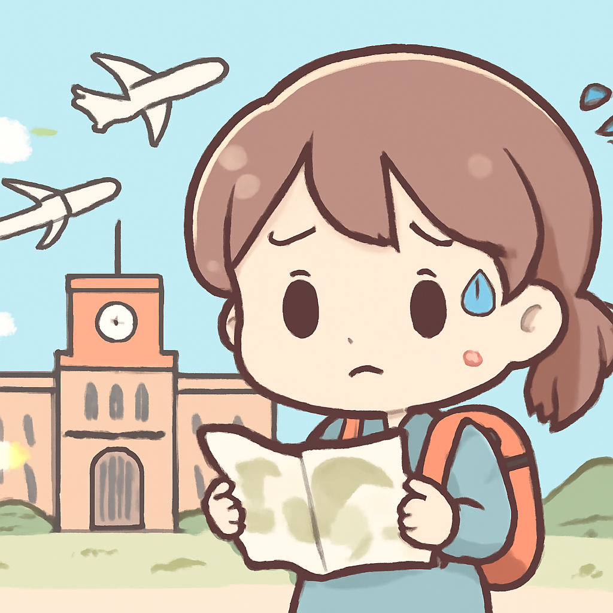

其一 · 巴基斯坦 · 空襲阿富汗大學
巴基斯坦空襲阿富汗，造成多人傷亡。

在阿富汗的庫納省，巴基斯坦的空襲造成至少七人死亡，七十五人受傷。這起事件引發了對兩國緊張關係的擔憂，尤其是在當地大學附近發生此事。這不僅影響了當地的安全局勢，也可能加劇國際間的緊張情勢，讓人不禁想問，這場空襲究竟是為了什麼？
🔗 原始新聞 ↗
2026-04-28 · 以古觀今，以笑抗愁
巴基斯坦空襲阿富汗，造成多人傷亡。

在阿富汗的庫納省，巴基斯坦的空襲造成至少七人死亡，七十五人受傷。這起事件引發了對兩國緊張關係的擔憂，尤其是在當地大學附近發生此事。這不僅影響了當地的安全局勢，也可能加劇國際間的緊張情勢，讓人不禁想問，這場空襲究竟是為了什麼？
🔗 原始新聞 ↗
雅加達發生火車相撞事故，至少四人死亡。
在雅加達，一列通勤列車和一列長途列車於週一相撞，造成至少四人死亡，數十人受傷。這起事故再次引發了對交通安全的關注，尤其是在交通繁忙的城市中，大家都希望能安全抵達目的地。希望接下來的列車能多點小心，讓乘客不再心驚膽跳！
🔗 原始新聞 ↗
尼日利亞孤兒院遭襲，23名兒童被綁架。
在尼日利亞，一群槍手襲擊了一所孤兒院，綁架了23名兒童和院方負責人。這起事件不僅引起了國內的憤怒，也讓人們再次關注到兒童的安全問題，希望能有更多的保護措施出台，別讓這些無辜的小朋友們成為暴力事件的受害者。
🔗 原始新聞 ↗
俄軍確認撤出馬里北部城市，當地局勢緊張。
在馬里，俄軍確認從北部城市基達爾撤出，此地近日發生了激烈的衝突。這對當地的政局穩定來說是個不小的挑戰，特別是面對分裂主義者和伊斯蘭主義者的雙重威脅。看來馬里的風雲變幻，讓人捏了一把冷汗！
🔗 原始新聞 ↗
加拿大為美國公民開設新公民身份申請途徑。
加拿大最近推出了一項新政策，讓擁有加拿大出生祖先的人可以更輕鬆地申請公民身份。這項措施吸引了大量美國人排隊申請，讓人感受到加國的「吸引力」正持續上升。說不定不久後，加拿大的國籍將成為新一波的時尚潮流呢！
🔗 原始新聞 ↗